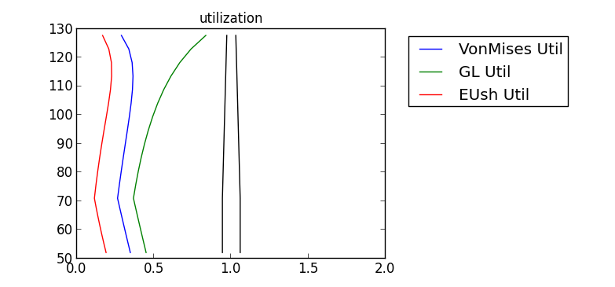

5. Tutorial¶
Two examples are included in this tutorial section: simulation of a jacket-tower, and optimization of a jacket-tower support structure.
5.1. 5-MW Jacket Tower in 30 m Waters¶
This example demonstrates how to setup and run analysis for a jacket-tower support structure. The structure looks as shown in Figure Jacket-tower structure for the tutorial example. :

Figure 1: Jacket-tower structure for the tutorial example.
First, we set up the jacket geometry parameters:
Jcktins=JcktGeoInputs()
Jcktins.nlegs =4
Jcktins.nbays =5
Jcktins.batter=12.
Jcktins.dck_botz =16.
Jcktins.dck_width=2*6.
Jcktins.weld2D =0.5
Jcktins.VPFlag = True #vertical pile T/F; to enable piles in frame3DD set pileinputs.ndiv>0
Jcktins.clamped= False #whether or not the bottom of the structure is rigidly connected. Use False when equivalent spring constants are being used.
Jcktins.AFflag = False #whether or not to use apparent fixity piles
Jcktins.PreBuildTPLvl = 5 #if >0, the TP is prebuilt according to rules per PreBuildTP
Then we set up various component inputs. Start with the soil stratigraphy:
Soilinputs=SoilGeoInputs()
Soilinputs.zbots =-np.array([3.,5.,7.,15.,30.,50.])
Soilinputs.gammas =np.array([10000.,10000.,10000.,10000.,10000.,10000.])
Soilinputs.cus =np.array([60000.,60000.,60000.,60000.,60000.,60000.])
Soilinputs.phis =np.array([26.,26.,26.,26.,26.,26])#np.array([36.,33.,26.,37.,35.,37.5])#np.array([36.,33.,26.,37.,35.,37.5])
Soilinputs.delta =25.
Soilinputs.sndflg =True
Soilinputs.PenderSwtch =False #True
Soilinputs.SoilSF =1.
Soilinputs2=copy.copy(Soilinputs) #Parked case. We assume same stiffness although this may not be the case under a different load
Then assign water and wind environmental parameters:
Waterinputs=WaterInputs()
Waterinputs.wdepth =30.
Waterinputs.wlevel =30. #Distance from bottom of structure to surface THIS, I believe is no longer needed as piles may be negative in z, to check and remove in case
Waterinputs.T=12. #Wave Period
Waterinputs.HW=10. #Wave Height
Waterinputs.Cd=3. #Drag Coefficient, enhanced to account for marine growth and other members not calculated
Waterinputs.Cm=8.#2. #ADded mass Coefficient
Waterinputs2=copy.copy(Waterinputs) #PARKED CONDITIONS - still max wave here
Waterinputs.T=8. #Wave Period
Waterinputs.HW=4. #Wave Height
Windinputs=WindInputs()
Windinputs.Cdj=4. #Drag Coefficient for jacket members, enhanced to account for TP drag not calculated otherwise
Windinputs.Cdt=2 #Drag Coefficient for tower, enhanced to account for TP drag not calculated otherwise
Windinputs.HH=100. #CHECK HOW THIS COMPLIES....
Windinputs.U50HH=30. #assumed gust speed
Now it is time to assign properties for the various member classes of the structure.
We will follow a bottom up approach, where the definitions are offered from the bottom members towards the top ones.
Start with the piles:
Pilematin=MatInputs()
Pilematin.matname=np.array(['steel'])
Pilematin.E=np.array([ 25.e9])
Dpile=2.5#0.75 # 2.0
tpile=0.01
Lp=20. #45
Pileinputs=PileGeoInputs()
Pileinputs.Pilematins=Pilematin
Pileinputs.ndiv=0 #3
Pileinputs.Dpile=Dpile
Pileinputs.tpile=tpile
Pileinputs.Lp=Lp #[m] Embedment length
Then continue with the main legs:
legmatin=MatInputs()
legmatin.matname=(['heavysteel','heavysteel','heavysteel','heavysteel'])
#legmatin.E=np.array([2.0e11])
Dleg=np.array([1.5,1.5,1.5,1.5,1.5,1.5])
tleg=1.5*np.array([0.0254]).repeat(Dleg.size)
leginputs=LegGeoInputs()
leginputs.legZbot = 1.0
leginputs.ndiv=1
leginputs.legmatins=legmatin
leginputs.Dleg0=Dleg[0]
leginputs.tleg0=tleg[0]
legbot_stmphin =1.5 #Distance from bottom of leg to second joint along z; must be>0
Then move on to the X-braces:
Xbrcmatin=MatInputs()
Xbrcmatin.matname=np.array(['heavysteel']).repeat(Jcktins.nbays)
#Xbrcmatin.E=np.array([ 2.2e11, 2.0e11,2.0e11,2.0e11,2.0e11])
Dbrc=np.array([1.,1.,1.0,1.0,1.0])
tbrc=np.array([1.,1.,1.0,1.0,1.0])*0.0254
Xbrcinputs=XBrcGeoInputs()
Xbrcinputs.Dbrc0=Dbrc[0]
Xbrcinputs.tbrc0=tbrc[0]
Xbrcinputs.ndiv=2#2
Xbrcinputs.Xbrcmatins=Xbrcmatin
Xbrcinputs.precalc=False #True #This can be set to true if we want Xbraces to be precalculated in D and t, in which case the above set Dbrc and tbrc would be overwritten
In this example we are considering the Mud-braces. They normally mitigate stress concentrations at the pile-leg connections and provide some torsional stiffness:
Mbrcmatin=MatInputs()
Mbrcmatin.matname=np.array(['heavysteel'])
#Mbrcmatin.E=np.array([ 2.5e11])
Dbrc_mud=1.5
Mbrcinputs=MudBrcGeoInputs()
Mbrcinputs.Dbrc_mud=Dbrc_mud
Mbrcinputs.ndiv=2
Mbrcinputs.Mbrcmatins=Mbrcmatin
Mbrcinputs.precalc=False #True #This can be set to true if we want Mudbrace to be precalculated in D and t, in which case the above set Dbrc_mud and tbrc_mud would be overwritten
In this case we are not considering a top horizontal brace below the main perimeter girder of the TP, so we will set its ndiv to 0:
Hbrcmatin=MatInputs()
Hbrcmatin.matname=np.array(['heavysteel'])
Hbrcmatin.E=np.array([ 2.5e11])
Dbrc_hbrc=1.1
Hbrcinputs=HBrcGeoInputs()
Hbrcinputs.Dbrch=Dbrc_hbrc
Hbrcinputs.ndiv=0#2
Hbrcinputs.Hbrcmatins=Hbrcmatin
Hbrcinputs.precalc=True #This can be set to true if we want Hbrace to be set=Xbrace top D and t, in which case the above set Dbrch and tbrch would be overwritten
The next step consists of declaring the transition piece properties.
TPlumpinputs=TPlumpMass()
TPlumpinputs.mass=200.e3 #[kg]
TPstmpsmatin=MatInputs()
TPbrcmatin=MatInputs()
TPstemmatin=MatInputs()
TPbrcmatin.matname=np.array(['heavysteel'])
#TPbrcmatin.E=np.array([ 2.5e11])
TPstemmatin.matname=np.array(['heavysteel']).repeat(2)
#TPstemmatin.E=np.array([ 2.1e11]).repeat(2)
TPinputs=TPGeoInputs()
TPinputs.TPbrcmatins=TPbrcmatin
TPinputs.TPstemmatins=TPstemmatin
TPinputs.TPstmpmatins=TPstmpsmatin
TPinputs.Dstrut=leginputs.Dleg[-1]
TPinputs.tstrut=leginputs.tleg[-1]
TPinputs.Dgir=Dbrc_hbrc
TPinputs.tgir=0.0254
TPinputs.Dbrc=1.1
TPinputs.Dbrc=TPinputs.Dgir
TPinputs.tbrc=TPinputs.tgir
TPinputs.hstump=1.0#1.0
TPinputs.Dstump=1.25#1.0
TPinputs.stumpndiv=1#2
TPinputs.brcndiv=1#2
TPinputs.girndiv=1#2
TPinputs.strutndiv=1#2
TPinputs.stemndiv=1#2
TPinputs.nstems=3
TPinputs.Dstem=np.array([6.]).repeat(TPinputs.nstems)
TPinputs.tstem=np.array([0.1,0.11,0.11])
TPinputs.hstem=np.array([6./TPinputs.nstems]).repeat(TPinputs.nstems)
Then the tower geometry is assigned:
Twrmatin=MatInputs()
Twrmatin.matname=np.array(['heavysteel'])
#Twrmatin.E=np.array([ 2.77e11])
Twrinputs=TwrGeoInputs()
Twrinputs.Twrmatins=Twrmatin
#Twrinputs.Htwr=70. #Trumped by HH
Twrinputs.Htwr2frac=0.2 #fraction of tower height with constant x-section
Twrinputs.ndiv=np.array([6,12]) #ndiv for uniform and tapered section
Twrinputs.DeltaZmax= 6. #[m], maximum FE element length allowed in the tower members (i.e. the uniform and the tapered members)
Twrinputs.Db=5.6
Twrinputs.DTRb=130.
Twrinputs.DTRt=150.
Twrinputs.Dt=0.55*Twrinputs.Db
Then the RNA mass properties are specified:
RNA_F=np.array([1000.e3,0.,0.,0.,0.,0.]) #operational
RNA_F2=np.array([500.e3,0.,0.,0.,0.,0.]) #Parked
Then assign the RNA aerodynamic loads:
RNA_F=np.array([1000.e3,0.,0.,0.,0.,0.]) #operational
RNA_F2=np.array([500.e3,0.,0.,0.,0.,0.]) #Parked
Finally auxiliary parameters for the Frame3DD solver may be assigned:
FrameAuxIns=Frame3DDaux()
FrameAuxIns.sh_fg=1 #shear flag-->Timoshenko
FrameAuxIns.deltaz=5.
FrameAuxIns.geo_fg=0
FrameAuxIns.nModes = 6 # number of desired dynamic modes of vibration
FrameAuxIns.Mmethod = 1 # 1: subspace Jacobi 2: Stodola
FrameAuxIns.lump = 0 # 0: consistent mass ... 1: lumped mass matrix
FrameAuxIns.tol = 1e-9 # mode shape tolerance
FrameAuxIns.shift = 0.0 # shift value ... for unrestrained structures
FrameAuxIns.gvector=np.array([0.,0.,-9.8065]) #GRAVITY
It is then time to launch the assembly and pass all the inputs to it; note that the assembly is called with parameters depending on the selected inputs:
myjckt=set_as_top(JacketSE(Jcktins.clamped,Jcktins.AFflag,twodlcs=twodlcs)) ##(Jcktins.PreBuildTPLvl>0),
#Pass all inputs to assembly
myjckt.JcktGeoIn=Jcktins
myjckt.Soilinputs=Soilinputs
myjckt.Soilinputs2=Soilinputs2 #Parked conditions
myjckt.Waterinputs=Waterinputs
myjckt.Windinputs=Windinputs
myjckt.RNA_F=RNA_F
myjckt.Waterinputs2=Waterinputs2 #Parked conditions
myjckt.Windinputs2=Windinputs2 #Parked conditions
myjckt.RNA_F2=RNA_F2 #Parked conditions
myjckt.Pileinputs=Pileinputs
myjckt.leginputs=leginputs
myjckt.legbot_stmphin =legbot_stmphin
myjckt.Xbrcinputs=Xbrcinputs
myjckt.Mbrcinputs=Mbrcinputs
myjckt.Hbrcinputs=Hbrcinputs
myjckt.TPlumpinputs=TPlumpinputs
myjckt.TPinputs=TPinputs
myjckt.RNAinputs=RNAins
myjckt.RNAinputs2=RNAins2
myjckt.Twrinputs=Twrinputs
myjckt.TwrRigidTop=TwrRigidTop
myjckt.FrameAuxIns=FrameAuxIns
Then run the assembly:
myjckt.run()
You may print some of the results of the analysis:
They should look as shown here:
>>>7 nodes in the constant-OD segment of the tower
>>>('>>>>>>>>>> needed embedment Lp0=', 29.499564957098116)
>>>First two Freqs.= 0.1983 and 0.1994 Hz
>>>jacket+TP(structural+lumped) mass (no tower, no piles) [kg] = 1154582
>>>tower mass [kg] = 335018
>>>TP mass structural + lumped mass [kg] = 335354
>>>piles (all) mass (for assigned (not optimum) Lp [kg] = 48844
>>>frame3dd model mass (structural + TP lumped) [kg] = 1489600
>>>Tower Top Displacement in Global Coordinate System [m] =0.4843
>>>MAX member compression-bending utilization at joints = 0.5608
>>>MAX member tension utilization at joints = 0.6413
>>>MAX X-joint utilization at joints = 0.2600
>>>MAX K-joint utilization at joints = 0.3667
If you plot the utilization of the tower, you should get something as in Figure Utilization along tower height for: Von-Mises/yield; shell buckling; global buckling., where the Von Mises stress, global and shell buckling utilizations are shown along the tower span. Each curve represents material utilization and so should be <1 for feasibility.

Figure 2: Utilization along tower height for: Von-Mises/yield; shell buckling; global buckling.
5.2. Jacket-Tower Optimization - OpenMDAO Internal Optimization Driver¶
We begin with the same setup as the previous section, but now we need to set up the optimizer and thus also offer bounds for the design variables:
# x= [ batter, Dpile, tpile, Lp, Dleg, tleg, Dbrc, tbrc, Dbrc_mud, tbrc_mud, Db, DTRb Dt, DTRt Htwr2fac ]
MnCnst=np.array([ 8., 1., 1.*0.0254, 30., 1., 1.*0.0254, 1., 1.*0.0254, 1., 1.*0.0254, 5., 120., 3., 120., 0. ])
MxCnst=np.array([ 15., 2.5, 5.*0.0254, 50., 2.5, 5.*0.0254, 2., 5.*0.0254, 2., 5.*0.0254, 7., 200., 4., 200., 0.25 ])
Also import additional modules for optimization:
from pyopt_driver.pyopt_driver import pyOptDriver
from openmdao.lib.casehandlers.api import DumpCaseRecorder
The optimizer must first be selected and configured, in this example use SNOPT.
We now set the objective, and in this example it is normalized to be of order 1 for better convergence behavior.
myjckt.driver.add_objective('(LoadFrameOuts.Frameouts.mass[0]+LoadFrameOuts.Mpiles)/1.e6')
The batter,pile OD and thickness, Embedment Length, Leg OD and thickness, X-brace OD and thickness,Mud-brace OD and thickness,Tower base OD and DTR, tower-top OD and DTR, and height of constant cross-section segment are added as design variables.
myjckt.driver.add_parameter('JcktGeoIn.batter', low=MnCnst[0], high=MxCnst[0])
myjckt.driver.add_parameter('Pileinputs.Dpile', low=MnCnst[1], high=MxCnst[1])
myjckt.driver.add_parameter('Pileinputs.tpile', low=MnCnst[2], high=MxCnst[2])
myjckt.driver.add_parameter('Pileinputs.Lp', low=MnCnst[3], high=MxCnst[3])
myjckt.driver.add_parameter('leginputs.Dleg0', low=MnCnst[4], high=MxCnst[4])
myjckt.driver.add_parameter('leginputs.tleg0', low=MnCnst[5], high=MxCnst[5])
myjckt.driver.add_parameter('Xbrcinputs.Dbrc0', low=MnCnst[6], high=MxCnst[6])
myjckt.driver.add_parameter('Xbrcinputs.tbrc0', low=MnCnst[7], high=MxCnst[7])
myjckt.driver.add_parameter('Mbrcinputs.Dbrc_mud',low=MnCnst[8], high=MxCnst[8])
myjckt.driver.add_parameter('Mbrcinputs.tbrc_mud',low=MnCnst[9], high=MxCnst[9])
myjckt.driver.add_parameter('Twrinputs.Db', low=MnCnst[10], high=MxCnst[10])
myjckt.driver.add_parameter('Twrinputs.DTRb', low=MnCnst[11], high=MxCnst[11])
myjckt.driver.add_parameter('Twrinputs.Dt', low=MnCnst[12], high=MxCnst[12])
myjckt.driver.add_parameter('Twrinputs.DTRt', low=MnCnst[13], high=MxCnst[13])
myjckt.driver.add_parameter('Twrinputs.Htwr2frac',low=MnCnst[14], high=MxCnst[14])
Constraints are then added; note that we are after a target first eigenfrequeccy of 0.22 Hz:
myjckt.driver.add_constraint('LoadFrameOuts.Frameouts.Freqs[0] >=0.22')
myjckt.driver.add_constraint('max(LoadFrameOuts.tower_utilization.GLUtil) <=1.0')
myjckt.driver.add_constraint('max(LoadFrameOuts.tower_utilization.EUshUtil) <=1.0')
myjckt.driver.add_constraint('max(LoadFrameOuts2.tower_utilization.GLUtil) <=1.0')
myjckt.driver.add_constraint('max(LoadFrameOuts2.tower_utilization.EUshUtil) <=1.0')
myjckt.driver.add_constraint('LoadFrameOuts.jacket_utilization.t_util <=1.0')
myjckt.driver.add_constraint('LoadFrameOuts.jacket_utilization.cb_util <=1.0')
myjckt.driver.add_constraint('LoadFrameOuts.jacket_utilization.KjntUtil <= 1.0')
myjckt.driver.add_constraint('LoadFrameOuts.jacket_utilization.XjntUtil <= 1.0')
myjckt.driver.add_constraint('LoadFrameOuts2.jacket_utilization.t_util <=1.0')
myjckt.driver.add_constraint('LoadFrameOuts2.jacket_utilization.cb_util <=1.0')
myjckt.driver.add_constraint('LoadFrameOuts2.jacket_utilization.KjntUtil <= 1.0')
myjckt.driver.add_constraint('LoadFrameOuts2.jacket_utilization.XjntUtil <= 1.0')
myjckt.driver.add_constraint('PreBuild.wbase <= 30.')
myjckt.driver.add_constraint('leginputs.Dleg0/leginputs.tleg0 >= 22.')
myjckt.driver.add_constraint('Xbrcinputs.Dbrc0/Xbrcinputs.tbrc0 >= 22.')
myjckt.driver.add_constraint('Mbrcinputs.Dbrc_mud/Mbrcinputs.tbrc_mud >= 22.')
myjckt.driver.add_constraint('LoadFrameOuts.Lp0rat >= 0.')
myjckt.driver.add_constraint('LoadFrameOuts2.Lp0rat >= 0.')
A recorder is added to display each iteration to the screen.
myjckt.recorders = [DumpCaseRecorder('optimization.dat')]
Now the optimization can be run.
myjckt.run()
THe final configuration skeleton is shown in Figure Jacket-tower structure for the tutorial example after OpenMDAO driven optimization via SNOPT.. If you plot the utilization of the tower, you should get something as in Figure Utilization along tower height for: Von-Mises/yield; shell buckling; global buckling. Optimization obtained via OpenMDAO pyOPT driver with SNOPT., where the Von Mises stress, global and shell buckling utilizations are shown along the tower span. Each is a utilization and so should be <1 for feasibility.
>>>7 nodes in the constant-OD segment of the tower
>>>('>>>>>>>>>> needed embedment Lp0=', 41.880993761055052)
>>>First two Freqs.= 0.2143 and 0.2154 Hz
>>>jacket+TP(structural+lumped) mass (no tower, no piles) [kg] = 1135683
>>>tower mass [kg] = 396546
>>>TP mass structural + lumped mass [kg] = 347611
>>>piles (all) mass (for assigned (not optimum) Lp [kg] = 94910
>>>frame3dd model mass (structural + TP lumped) [kg] = 1532229
>>>Tower Top Displacement in Global Coordinate System [m] =0.4437
>>>MAX member compression-bending utilization at joints = 0.5559
>>>MAX member tension utilization at joints = 0.6590
>>>MAX X-joint utilization at joints = 0.2586
>>>MAX K-joint utilization at joints = 0.3807
The total mass of the jacket, tower, and TP (both structural and lumped mass), and piles is 1,627,139 kg. Also note that the first natural frequencies do NOT match the requirement >0.22 Hz.

Figure 3: Jacket-tower structure for the tutorial example after OpenMDAO driven optimization via SNOPT.

Figure 4: Utilization along tower height for: Von-Mises/yield; shell buckling; global buckling. Optimization obtained via OpenMDAO pyOPT driver with SNOPT.
5.3. Jacket-Tower Optimization - External Optimization via PyOPT¶
For this tutorial, we use an auxiliary module JacketOpt_PyOPT.py and the auxiliary input file MyJacketInputs.py. The new module is just a wrapper for jacketSE and contains: calls to the pyOPT optimization package to perform the optimization, objective function and constraints. The input file contains the same jacket input information as in the previous example.
We simply run a SNOPT optimization case by issuing:
>>>python JacketOpt_PyOPT.py MyJacketInputs.py True
The run terminates with the following results:
>>>7 nodes in the constant-OD segment of the tower
>>>('>>>>>>>>>> needed embedment Lp0=', 27.634632160831377)
>>>Jwrapper SOLUTION: bat= 9.48, Dpile= 2.45, tpile=0.025, Lp= 27.6 Dleg 1.14, tleg0.032
>>> dck_width =12.76, Dbrc= 1.00, tbrc=0.025, Dmudbrc= 1.00, tmudbrc=0.025
>>>from Jwrapper Db= 6.38, DTRb=139.88, Dt= 3.21, DTRt=139.88,H2twrfrac= 0.25, Dgir= 1.00,tgir=0.025, Twrmass=413487.941, PilesMass =187056.839, TPmass= 1.424e+05, Frame3DD+Piles Totmass=1477428.623
>>>Minimum mass Mjacket, MPiles, TPmass = 1290371.783880 187056.839229 142411.694364
>>>Minimum mass Tower, Jacket(no tower no piles) = 413487.941068 876883.842813
>>>Minimum found at Dpile=2.451534, tpile=0.025400 Lp=27.634661
>>>Minimum found at Dbrc=1.000000, tbrc=0.025400
>>>Minimum found at Dbrcmud=1.000000, tbrcmud=0.025400
>>>Minimum found at batter=9.476407, dckwidth=12.758457, Dleg=1.138723, tleg=0.031565,
>>>Minimum found at Dgir=1.000084, tgir=0.025400
>>>Minimum found at Db=6.379229 DTRb=139.882073 Dt=3.208883 DTRt=139.882073 H2frac=0.250000
>>>Minimum found at Freq 0.220003
>>>Minimum found at GLutil=0.734957 EUutil=0.195177
>>>Minimum found at Mudline Footprint=20.758694
>>>Elapsed time: 4514.93799996 seconds
>>>Execution count: 3422
The total mass of the jacket, tower, and TP (both structural and lumped mass), and piles is 1,677,428 kg. Note that in this case the frequency constraint is met.

Figure 5: Jacket-tower structure for the tutorial example after OpenMDAO driven optimization via SNOPT.

Figure 6: Utilization along tower height for: Von-Mises/yield; shell buckling; global buckling. Optimization obtained via pyOPT SNOPT.
5.4. Jacket-Tower Optimization - External Optimization via Python Cobyla¶
For this tutorial, we use an auxiliary module JacketOpt_ExtCobyla.py and the same auxiliary input file MyJacketInputs.py as above. The new module is just a wrapper for jacketSE and contains: calls to the python function scipy.optimize.fmin_cobyla to perform the optimization, objective function and constraints. The input file contains the same jacket input information as in the previous example.
We start by simply running:
>>>python JacketOpt_ExtCobyla.py MyJacketInputs.py
The run terminates with the following results:
>>>7 nodes in the constant-OD segment of the tower
>>>('>>>>>>>>>> needed embedment Lp0=', 46.965381137541016)
>>>Jwrapper SOLUTION: bat=15.00, Dpile= 1.00, tpile=0.025, Lp= 47.0 Dleg 1.50, tleg 0.025
>>> dck_width =13.92, Dbrc= 1.00, tbrc=0.025, Dmudbrc= 1.00, tmudbrc=0.025
>>>from Jwrapper Db= 6.96, DTRb=200.00, Dt= 3.62, DTRt=200.00,H2twrfrac= 0.25, Dgir= 1.00,tgir=0.025, Twrmass=349424.881, PilesMass =127705.311, TPmass= 1.353e+05, Frame3DD+Piles Totmass=1330334.683
>>>Minimum mass Mjacket, MPiles, TPmass = 1202629.371883 127705.310878 135269.829145
>>>Minimum mass Tower, Jacket(no tower no piles) = 349424.880736 853204.491147
>>>Minimum found at Dpile=1.000000, tpile=0.025400 Lp=46.965381
>>>Minimum found at Dbrc=1.000000, tbrc=0.025400
>>>Minimum found at Dbrcmud=1.000000, tbrcmud=0.025400
>>>Minimum found at batter=15.000000, dckwidth=13.921647, Dleg=1.497250, tleg=0.025400,
>>>Minimum found at Dgir=1.000000, tgir=0.025400
>>>Minimum found at Db=6.960824 DTRb=200.000000 Dt=3.620849 DTRt=200.000000 H2frac=0.250000
>>>Minimum found at Freq 0.220000
>>>Minimum found at GLutil=0.679969 EUutil=0.291541
>>>Minimum found at Mudline Footprint=17.809106 beta3D=54.979833
The overall mass (jacket, tower, TP (structural and lumped mass), and piles amounts to 1,530,334 kg, which is less than the optimum found in the previous optimizations.
Cobyla seems to perform better than the other optimization options.

Figure 7: Jacket-tower structure for the tutorial example after OpenMDAO driven optimization via SNOPT.

Figure 8: Utilization along tower height for: Von-Mises/yield; shell buckling; global buckling. Optimization obtained via fmin_cobyla.
5.5. Jacket-Tower Optimization - Optimization via OpenMDAOs Cobyla (non-PyOPT)¶
For this tutorial, we repeat what was done in Section Jacket-Tower Optimization - OpenMDAO Internal Optimization Driver and this time use the simple COBYLAdriver, not the PyOPTdriver. The input file contains the same jacket input information as in the previous example.
We start by simply running:
>>>python jacket.py True Cobyla
The run terminates with the following results:
>>>
>>> Return from subroutine COBYLA because the MAXFUN limit has been reached.
>>>
>>> NFVALS = 2000 F = 1.450805E+00 MAXCV = 1.500592E-06
>>> X = 1.204965E+01 1.494575E+00 2.540000E-02 3.000000E+01 1.488532E+00
>>> 2.540000E-02 1.000000E+00 2.540000E-02 1.000000E+00 2.540000E-02
>>> 6.194941E+00 1.300558E+02 3.144349E+00 1.500515E+02 2.500000E-01
>>>First two Freqs.= 0.2200 and 0.2211 Hz
>>>jacket+TP(structural+lumped) mass (no tower, no piles) [kg] = 1130736
>>>tower mass [kg] = 410342
>>>TP mass structural + lumped mass [kg] = 346367
>>>piles (all) mass (for assigned (not optimum, unless optimization is run) Lp [kg] = 109657
>>>frame3dd model mass (structural + TP lumped) [kg] = 1541078
>>>frame3dd model mass (structural + TP lumped) + Pile Mass [kg] = 1650735
>>>Tower Top Displacement in Global Coordinate System [m] =0.4146
>>>MAX member compression-bending utilization at joints = 0.5647
>>>MAX member tension utilization at joints = 0.6596
>>>MAX X-joint utilization at joints = 0.2544
>>>MAX K-joint utilization at joints = 0.3807
The overall mass (jacket, tower, TP (structural and lumped mass), and piles amounts to 1,650,735 kg, which is still greater than the optimum found with teh external Cobyla, however, the maximum number of iterations was reached in this case.
Cobyla seems to perform better than the other optimization options.

Figure 9: Jacket-tower structure for the tutorial example after OpenMDAO driven optimization via COBYLA driver.
Figure 10: Utilization along tower height for: Von-Mises/yield; shell buckling; global buckling. Optimization obtained via MDAO COBYLA driver.
{kind=link}